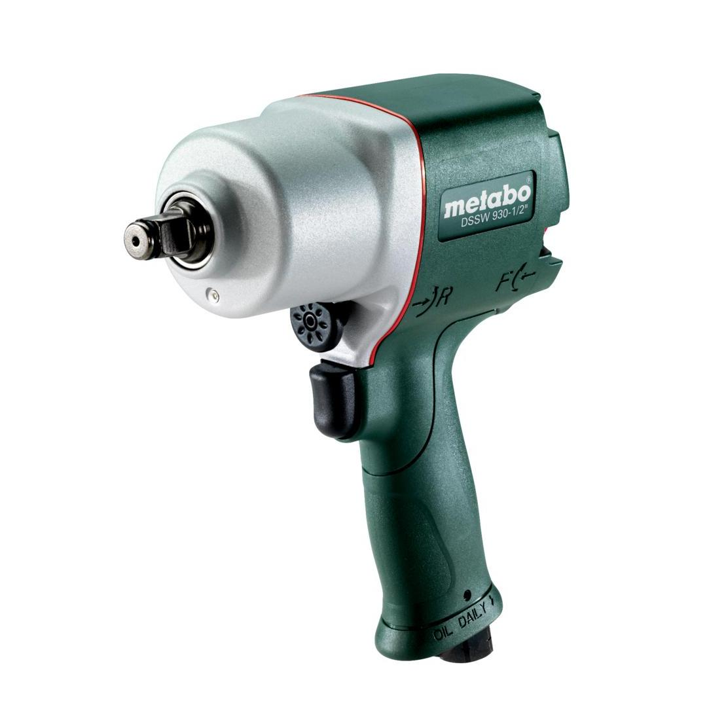

601549000

| Square holder | 1/2" |
| Maximum torque | 650 Nm / 480 ft. lbs |
| Max. loosening torque | 980 Nm / 730 ft. lbs |
| Operating pressure | 6.2 bar / 90 psi |
| Air requirement | 9 l/s / 19 cfm |
| Square holder | 1/2" |
| Maximum torque | 650 Nm / 480 ft. lbs |
| Max. loosening torque | 980 Nm / 730 ft. lbs |
| Weight | 1.8 kg / 4 lbs |
| Impact screwdriving | 4.8 m/s² |
| Uncertainty of measurement K | 0.97 m/s² |
| Sound pressure level | 88 dB(A) |
| Sound power level (LwA) | 99 dB(A) |
| Uncertainty of measurement K | 3 dB(A) |
| EURO Plug-in nipple 1/4" |
| ARO/Orion Plug-in nipple 1/4" |
| ISO Plug-in nipple 1/4" |
| Hose nozzle 10 mm and hose clamp according to ISO 11148 |
| 1 oil bottle |